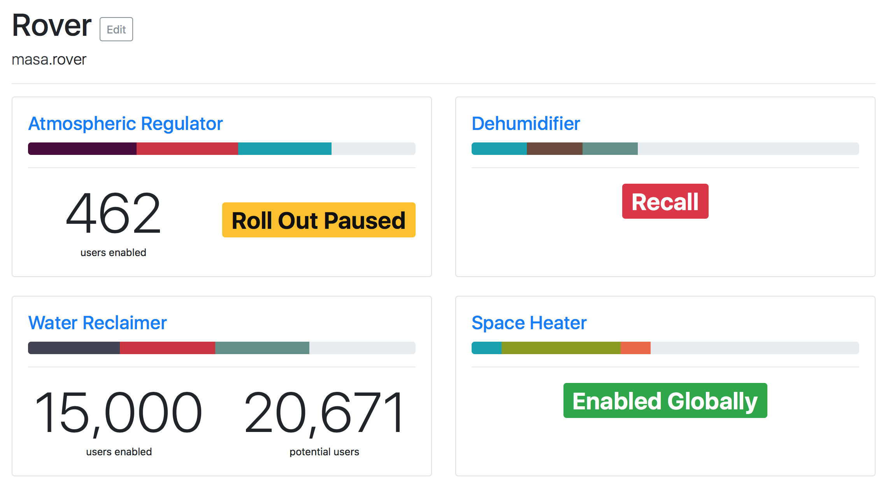
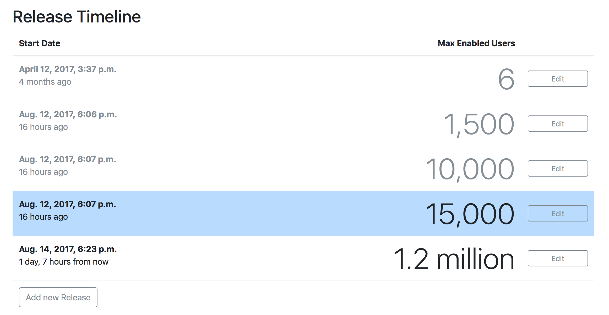
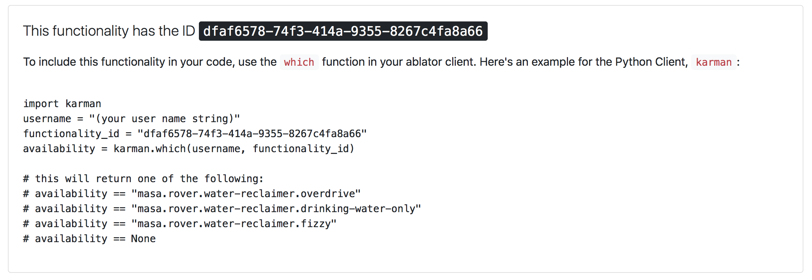

Roll out Functionality in your own pace
Ablator is a Service that enables you to roll out functionalities in a controlled way, and perform good A/B testing.
It works like this:
- You define your app's switchable functionalities in ablator.
- Your app asks ablator "User X wants Functionality Y. Which Flavor should they get, if any?"
- ablator takes care of slowly rolling out the feature in a way that you define.
Check it out on GitHub Follow @ablator_io on Twitter
Some Screenshots, for your viewing pleasure:



